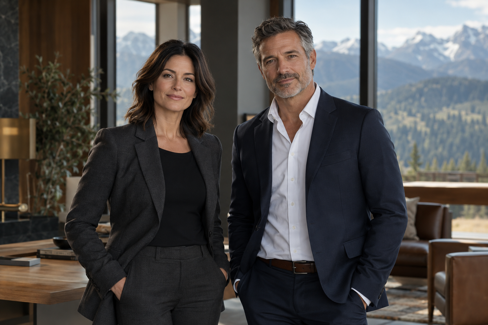

Business & Contracts
A clear structure for presenting agreements, business decisions, and the questions that connect them.
Steady by nature
A fictional practice concept shaped around thoughtful preparation, clear communication, and a grounded perspective.
Explore the approachThe approach
Good decisions begin with a clearer view.
Howl & Timber imagines a professional practice where the next step is understandable. The concept pairs a calm visual identity with a direct, considered voice.
Listen carefully. Define the question. Make room for the details that matter. These principles guide the fictional firm’s story and the way this website is organized.
Concept practice themes
Illustrative content for this website demonstration. These are not services available from this fictional firm.
A clear structure for presenting agreements, business decisions, and the questions that connect them.
A considered way to organize property themes, long-term priorities, and important transitions.
A calm presentation of complex questions, competing priorities, and the value of preparation.
Character study
Avery Howl and Rowan Timber are invented characters. Their portraits are AI-generated. These biographies do not describe actual lawyers, qualifications, or practice histories.

Fictional founding partner character
Avery’s character brings a calm, structured voice to the business and contract themes. Her imagined working style centers on careful listening, plain-language explanations, and mapping the decisions ahead.
Fictional founding partner character
Rowan’s character anchors the property and dispute-planning themes. His imagined approach emphasizes preparation, patient conversation, and a clear view of competing priorities.
About this demonstration
Consultations, messages, case reviews, and document uploads are unavailable. Do not submit personal or legal information.
This small adaptation explores a mature husky-and-mountain visual direction. The earlier page layout could not be recovered; this version uses a new layout and newly generated imagery.
Shown as illustrative portfolio work by Rogers Holdings LLC. No paid client relationship, testimonials, attorney credentials, or business results are claimed.
Return to Our Work